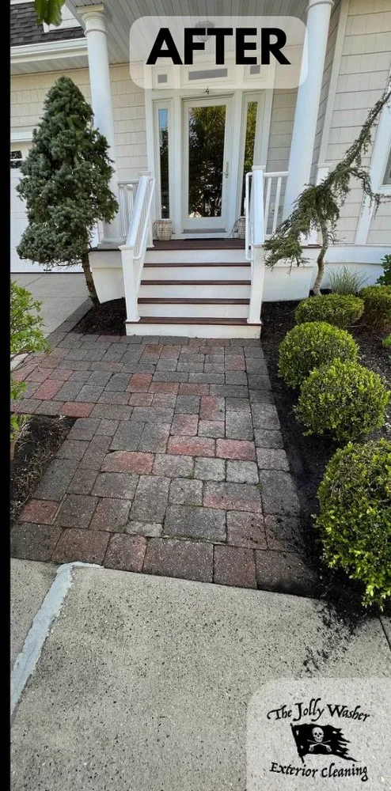

The Jolly Washer
5.0 · 325 Google reviews
Services Needed:
Fill in your name and address to continue
Call Us Today
609-757-8847
Fill in your name and message to continue
Follow on Instagram
@thejollywasher
Leave a Review
We appreciate your feedback!
★★★★★
See the Jolly Difference
Drag the slider to compare — browse all our projects

Before After Front Walkway Drag to see the transformation
Before & After
Real results from real South Jersey homes